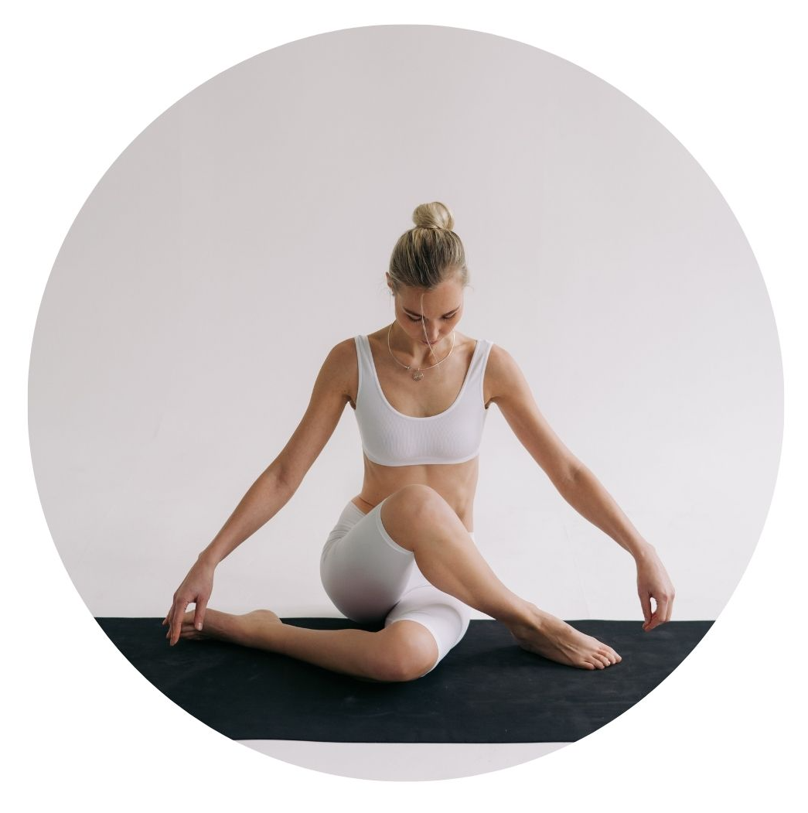

Nosotros
¿Quiénes somos?
Somos un espacio dedicado a compartir las enseñanzas del Yoga Kundalini aplicadas al día a día. Nuestra fundadora Gurú Kirtan, creó esta escuela para entregar las técnicas que le han guiado hacia una vida conectada con el propósito de su ser y así lograr que cada vez sean más quienes conecten con la voz de su alma.
